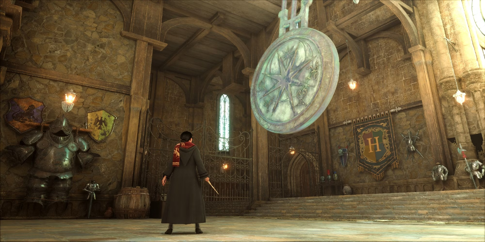

Sound plays a vital role in my project, as the different tracks help amplify the tension levels throughout the eight different states of the project. The origin of music comes from the game's soundtrack to provide that consistency of design when the visuals aren't explicitly depicted so that viewers who know of the game can still hear that association. I'm aware that this may seem just like an easy choice to make, but in a sense, this is a way for me to respect how well the game's soundtrack aligns with the vision I'm trying to shape this project into. If I were to take Call of Duty's soundtrack, for example (if I was doing that game), it wouldn't align with this idea I'm going with for the soundtrack.
Now, let's understand the song choices and why I chose each one.
Countdown
Fireworks - Embark StudiosThe reason behind this song choice was the most simple out of all of them. It was because the song gradually built up to a final ending point, which worked quite well for the extended duration of a countdown, and even just listening to the music on its own, you start to get excited about it. The constant kick drum made me solidify this choice, which felt like something from a massive clock you'd see in a thing like Harry Potter.

Intro
The World's Greatest Game Show - Embark StudiosThis song felt like what would naturally come after such a glorious countdown, using the French Horns and strings to bring this epic feel to the piece. This is then followed by a repetitive section, which helps watchers go down the 'hype sine wave' that I've established throughout the development of this piece.
Map Overview
[You Wouldn't Be Here] Without Us - Embark StudiosThere were two key moments in this track that led me to choose it for this moment. The first is in the introductions of the song, where it's extremely airy in nature. I believe this helps symbolise if you're taking a deep breath. Because this section plays straight after the 'hyped up' intro, it gives you time to regain your composure, if only for a few moments.
The second part of this track that spoke to me is the constant semiquavers from the hi-hats (which are sometimes replaced with an arpeggiated synthesiser playing at the same speed). Compared to the epic kick drum in Firefly, this feels more like we're anticipating something. This is entirely correct; you are expecting something - the start of the match!
Game Start / Game Winner
Destroyer - Embark StudiosInitially, I wanted to use this track in the Map Overview section. However, it didn't give any time to cool down after the intro, so it got moved to this position. However, the fact that it builds up quickly to the song's chorus and that the chorus itself is so catchy is what led to his track being split over the Game Start and Winner.
Game Breakdown
Finally Alive - Embark StudiosThe critical aspect of this track is the constant use of the low pass filter on many of the instruments in the track. This leads to this feeling of ease and relaxation after what could have been a very intense and exciting match, bringing you down to the valley of the 'hype sine wave'.
Break
THE FINALS - Embark StudiosThis song combines aspects from Fireworks, The World's Greatest Game Show, and [You Wouldn't Be Here] Without Us. It has the snare drum replacing Fireworks's Kickdrum to represent that the time is ticking down, the epic French horns and strings to have some slight tension from The World's Greatest Game Show, but also the passive low stakes from [You Wouldn't Be Here] Without Us. Utilising this gives a song that I believe fits really well into being a break song for this type of event.